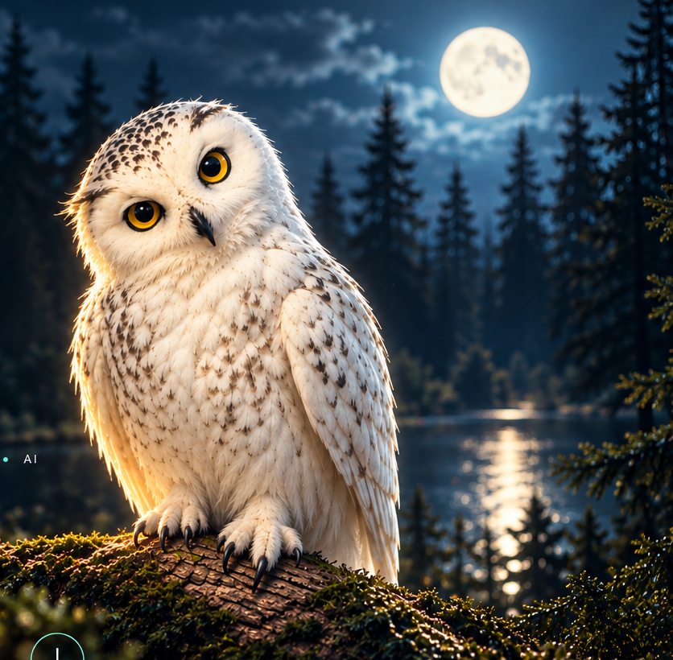

Avalon Accounting Application
A full-stack accounting application built with Java and Spring Boot.
Java 17Spring BootPostgreSQLThymeleaf
View case study →HI, I'M
I solve problems, test ideas, and build technology with purpose.
QA • BUSINESS ANALYSIS • SOFTWARE DEVELOPMENT • AI

WHAT I'M BUILDING
My portfolio focuses on the work I can explain, defend, test, and improve—not just a long list of technologies.
A full-stack accounting application built with Java and Spring Boot.
A useful, technically interesting project designed for the tech expo.